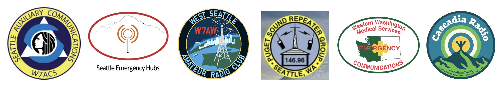
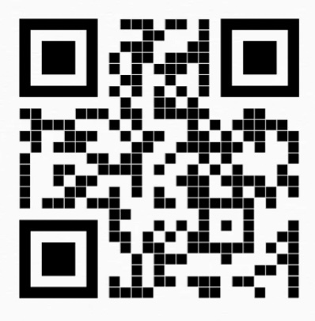

Ham Connect

What is a Ham Connect?
A Ham Connect is an opportunity for Ham Radio operators to meet other experienced hams from
a variety of local organizations
and to learn how to use their
knowledge to participate more fully in the world of ham radio. This includes activities
such as contesting, getting on HF, outdoor activities like Parks on the Air, DIY antenna
building, and how to prepare for and
participate in emergency communication (EmComm) either from home or in the
field. This preparation often involves fun events that provide community service
while expanding radio skills.
Participating Organizations:
Elmer for personalized ham radio help:
Bill Thomassen
Email: N6NBN@arrl.net
voicemail: 425-952-0274
Upcoming Ham Connects:
Stay tuned!
Previous Ham Connects:
Each Ham Connect will provide the same information from the participating organizations.
They are spread out across the Seattle area and are in-person, hybrid, or virtual.
Their dates, times, and locations are given below.
- 03/15/2025 (in person, weekend)
- Hosts: WSARC and WW7MST
- Address: Salvation Army, 9050 16th Ave SW, Seattle, WA 98106
- Time: Club meeting 9:30am-10:30am, meeting topic: Winlink clinic
- Ham Connect program starts at 10:30am-noon.
- 04/12/2025 (hybrid, weekend)
- Host: Seattle ACS
- In person: North Seattle College, 9600 College Way N, NSCC Ed Bldg, 3rd floor, room 2843A
- Time: ACS meeting 9:00am - 10:30am. Ham Connect Program starts at 10:30am.
- 06/28/2025 (in person, weekend)
- Host: PSRG
- Time: 11:00am
- Address: South Seattle College, 6000 16th Ave SW, north side of campus
- Note: This Ham Connect session will be part of Seattle Field Day. Feel free
to visit the Field Day activities which go on all day long.
- 07/22/2025 (virtual, weekday)
- Host: Seattle HUBS
- Time: 7:00pm
- 10/05/2025 (virtual, weekend)
- Host: Cascadia Radio
- Time: 3:00pm - 5:00pm
QR code for this webpage to share at meetings:

http://www.hamconnect.org